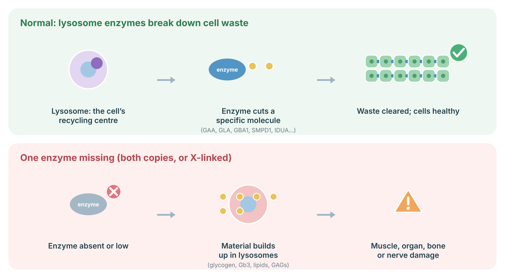

Understanding ASMD
ASMD is caused by two non-working copies of SMPD1. It ranges from a rapidly progressive infantile neurovisceral form (type A) to chronic visceral forms (type B) that may be found in childhood or adulthood.
Lysosomes are the cell’s recycling centres. Each lysosomal enzyme breaks down one kind of molecule. When an enzyme is missing, its target builds up inside lysosomes and slowly damages muscles, organs, bones or nerves. Enzyme replacement, substrate reduction or (for some conditions) stem-cell transplant can replace or bypass the missing step. In ASMD the missing enzyme is acid sphingomyelinase (made by SMPD1), so sphingomyelin builds up in the spleen, liver, lungs and, in the infantile form, the brain.

Sources: Platt FM, et al. Nat Rev Dis Primers 2018;4:27 (PubMed).
Signs and features
Diagnosis
Low acid sphingomyelinase activity confirms the diagnosis and SMPD1 sequencing identifies the variants.
- Roadmap2Rare Diagnostic Program — Revvity Omics; sponsor: Sanofi Canada. Test: Enzyme assays with reflex sequencing: GAA (Pompe), GLA + lyso-Gb3 (Fabry), GBA/SMPD1 (Gaucher, ASMD), IDUA (MPS I). Eligibility: Canadian clinicians; clinical suspicion of the disorder. Program page
- Roadmap2Rare Family Tree Testing — Revvity Omics; sponsor: Sanofi Canada. Test: Familial variant testing. Eligibility: Relatives of a proband with a known variant (Pompe, Fabry, Gaucher, ASMD, MPS I). Program page
- Detect Lysosomal Storage Diseases — Invitae; sponsor: not named in source. Test: Comprehensive LSD gene panel. Eligibility: Suspected LSD, abnormal enzyme result, positive newborn screen, or family history. Program page
No-cost testing paid by the sponsor. Criteria and availability change: confirm eligibility on the current requisition before ordering. Listed for information; not an endorsement.
Management
Genetic counselling
Each pregnancy of two carrier parents has a 1 in 4 chance of an affected child; testing of siblings and relatives is offered once the family variants are known.